Исторические и справочные гербы


Montreal
Путеводитель. Объектов в этом выпуске: 39.
OTIUM — практика нарочитого досуга. В античном смысле otium — не побег от работы, а время, когда внимание возвращается к памяти, пейзажу и мысли — без прикладного дедлайна.
Мы выстраиваем маршруты для неспешного присутствия, а не для чек-листа достопримечательностей: важно быть в месте, а не «потреблять» виды.
OTIUM — не туроператор. Это приглашение пройтись, остановиться и оставить маршрут незавершённым, если свет на фасаде заслуживает ещё минуты.
Исторические и справочные гербы
Путеводитель. Объектов в этом выпуске: 39.
Монреаль — крупнейший город провинции Квебек, франкоязычный центр Северной Америки.
Основан как Вилль-Мари на острове у слияния Оттавы и Святого Лаврентия; британский период и волны иммиграции создали двуязычный мегаполис. Подземный город, фестивали и старый порт отражают суровый климат и креативную экономику.
Тихая революция и референдумы о независимости Квебека определили политический фон; экономика сместилась к аэрокосмосу и играм. Монреаль остаётся билингвальным центром Канады с сильной сценой джаза, фестивалей и университетов.
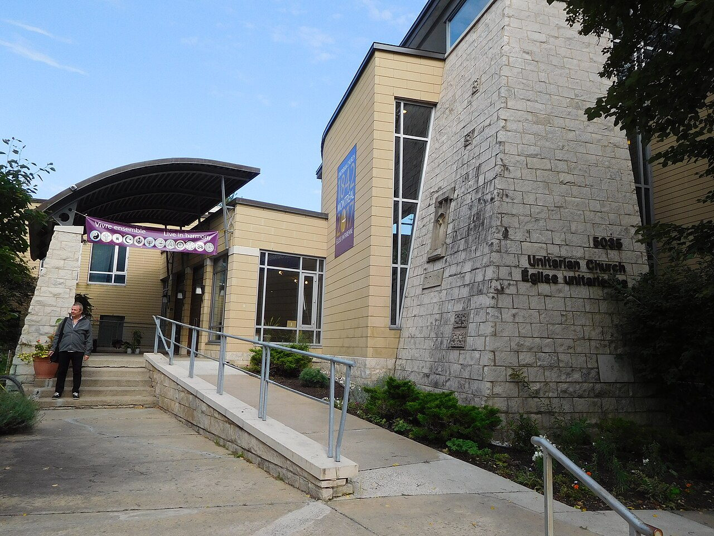

Рынок Атвотер — это знаковый продовольственный рынок Монреаля, яркий центр, куда собираются как местные жители, так и туристы, чтобы попробовать свежие продукты, товары ручной работы и восхитительную уличную еду. Основан в 1867 году, что делает его одним из старейших непрерывно функционирующих рынков Северной Америки. Здесь более 90 лавок, предлагающих всё: от свежих морепродуктов до сыров гурмэ и экзотических специй. В выходные дни здесь проходят выступления живой музыки, что придаёт городу праздничное настроение. Находится недалеко от Старого Монреаля, обеспечивая легкий доступ к историческим достопримечательностям и местам притяжения. Признан журналом Travel + Leisure одним из лучших фермерских рынков мира.
Основанный в 1867 году, рынок Атвотер (Atwater Market) на протяжении полутора веков является сердцем гастрономической сцены Монреаля. Изначально он был построен как центральный рынок для местных фермеров и рыбаков, а вскоре стал известен своим разнообразием свежих морепродуктов, мяса, фруктов, овощей и изделий ручной работы. Сегодня он остается одним из самых престижных рынков Канады, демонстрируя богатое культурное наследие города благодаря своему разнообразному ассортименту и оживленной атмосфере. Посещение рынка Атвотер позволяет гостям погрузиться в аутентичную культуру Монреаля и насладиться самыми свежими и вкусными продуктами, доступными в любом месте.

Музей биосферной среды — это уникальное культурное и образовательное учреждение, расположенное на территории кампуса Университета Монреаля. В нем представлены интерактивные выставки, посвященные экологическим проблемам, устойчивому развитию и биоразнообразию. В нем представлены более 40 интерактивных экспозиций, посвященных таким темам, как изменение климата, водные ресурсы и исчезающие виды. Сама конструкция представляет собой выдающийся образец современной архитектуры с характерным геодезическим купольным дизайном. Выставки регулярно обновляются с учетом текущих научных исследований и разработок в области экологических наук. Гости могут принять участие в мастер-классах и экскурсиях, которые проводятся квалифицированным персоналом. Расположенный на живописном склоне Мон-Рояль, «Биосфера» предлагает панорамные виды на городской пейзаж Монреаля.
Построенный в 1967 году в рамках выставки Expo 67, «Биосфера» первоначально был спроектирован архитектором Моше Сафди для представления канадского павильона. После завершения выставки он был преобразован в музей, посвященный экологическому образованию. Сегодня он продолжает вдохновлять посетителей своим инновационным подходом к науке и природе. Посещение Биосферы дает представление о насущных глобальных экологических проблемах, а также предоставляет практический опыт для изучения природоохранных усилий.

Основанный в 1842 году, рынок Бонсекур — исторический рынок, расположенный на улице де ла Комюн в Старом Монреале. С момента своего основания он является центром местных продуктов и ремесел. Это было изначально возведено в викторианскую эпоху в нео-готическом стиле. На рынке представлены ремесленные продуктовые лавки, пекарни, мясные магазины и сырные лавки. Здесь также проводятся еженедельные фермерские рынки, на которых представлен сезонный урожай. Рынок Бонсекюр предлагает уникальное сочетание исторического шарма и современных покупательских впечатлений. Рядом с рынком находится церковь Бонсекур, что придает ему историческое значение.
Основанный в 1842 году как первый постоянный крытый рынок в Монреале, рынок Бонсекур служил центральной торговой площадкой для фруктов, овощей, мяса и изделий ручной работы. Со временем он стал символом культурного наследия Монреаля, проводя традиционные фестивали и сохраняя местные традиции. Посетители приезжают на рынок Бонсекур, чтобы ощутить подлинную монреальскую культуру и попробовать свежие местные продукты.

Основанный в 1896 году, «Gibeau Orange Julep» — это историческая достопримечательность Монреаля, известная своей элегантной архитектурой в стиле ар-нуво и очаровательно сохранившимся интерьером. Это одно из самых знаковых чайных комнат города, где гостям предлагается уникальный опыт благодаря винтажному декору и традиционным джулепсам. Открыт в 1896 году в разгар экономического процветания Монреаля. Показательные интерьеры в стиле ар-нуво с рукодельными деталями. Подают классические оранжевые джулепы, приготовленные из свежих ингредиентов. На протяжении многих лет здесь проводилось множество культурных и социальных мероприятий. Признано Городом Монреаль объектом культурного наследия.
Построенный в 1896 году, «Gibeau Orange Julep» изначально задумывался как роскошная чайная и место для светских встреч. Со временем он приобрел известность благодаря изысканным элементам стиля Ар-нуво, включая замысловатую резьбу по дереву, витражные окна и elaborate цветочные мотивы. Учреждение сохранило свой очарование благодаря тщательным усилиям по сохранению, что позволило сохранить его историческое значение и привлекает посетителей со всего мира. «Gibeau Orange Julep» важен, поскольку представляет как архитектурное наследие эпохи Монреаля на рубеже веков, так и непреходящую привлекательность традиционных чайных.
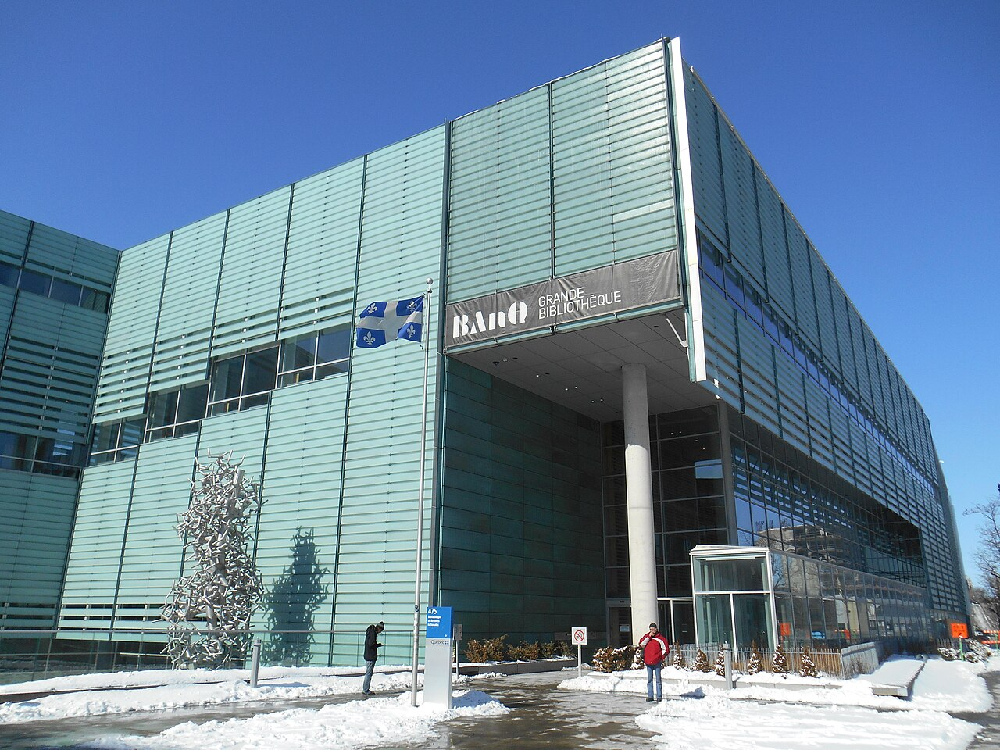
Гранде Библиотэк, ныне известная как BAnQ (Bibliothèque et Archives Nationales du Québec), является знаковой институцией, которая открыла свои двери в 1975 году. Она хранит самую крупную коллекцию книг и архивов в Квебеке, предоставляя читателям доступ к широкому спектру исторических документов, редких манускриптов и литературных сокровищ. В нём более шести миллионов предметов, включая книги, карты, рукописи, газеты и аудиовизуальные материалы. Его стеклянный атриум вдохновлен античными римскими банями и предлагает потрясающие виды на центр Монреаля. В Гранде Библиотеке находится Зал славы литературы Квебека, где представлены труды выдающихся авторов. Он также может похвастаться передовыми технологиями оцифровки и сохранения архивных материалов. Помимо того, что является хранилищем знаний, здесь проводятся различные выставки, конференции и культурные мероприятия.
Основанная в 1975 году, Большая библиотека (Grande Bibliothèque) была спроектирована архитектором Моше Сафди и является одной из самых знаковых культурных институций Монреаля. Здание восхваляют за свой инновационный дизайн, который сочетает современную архитектуру с традиционной эстетикой библиотек. Ее стеклянный атриум, напоминающий древнеримские бани, служит центром как для исследований, так и для досуга. Посетители приезжают сюда, чтобы изучить богатое наследие Квебека через его обширные коллекции и уникальные архитектурные особенности.
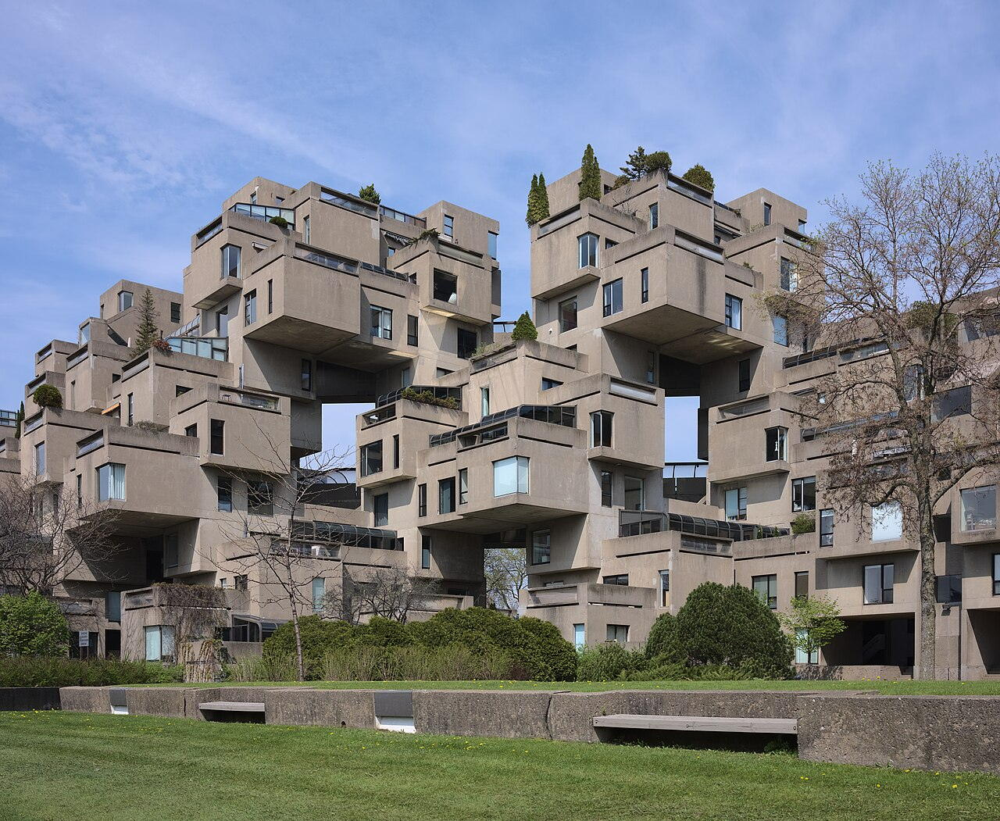
Habitat 67 — это революционный архитектурный шедевр, спроектированный Моше Сафди и построенный к Всемирной выставке 1967 года в Монреале. Эта знаковая структура состоит из 158 бетонных блоков, сложенных в сложную композицию, напоминающую пчелиный улей. Здание включает 146 жилых и 12 коммерческих помещений. Каждое помещение можно приобрести индивидуально и адаптировать под разные стили жизни. Получило несколько наград, включая премию Ага Хана за архитектуру в 1969 году. Хабитат 67 послужил вдохновением для многочисленных подобных проектов во всем мире. Дизайн включает открытую планировку с большими окнами, откуда открываются панорамные виды.
Построенный в период с 1962 по 1967 год, «Хабитат 67» изначально задумывался как демонстрация инновационных решений для городской жизни. Он представил принципы модульного дизайна, при котором каждая единица могла быть адаптирована в соответствии с потребностями жильцов. Проект провозглашён одним из самых значимых примеров современной архитектуры. Посещение Habitat 67 предоставляет уникальную возможность изучить пересечение искусства, архитектуры и градостроительства, а также оценить его новаторский подход к устойчивому образу жизни.
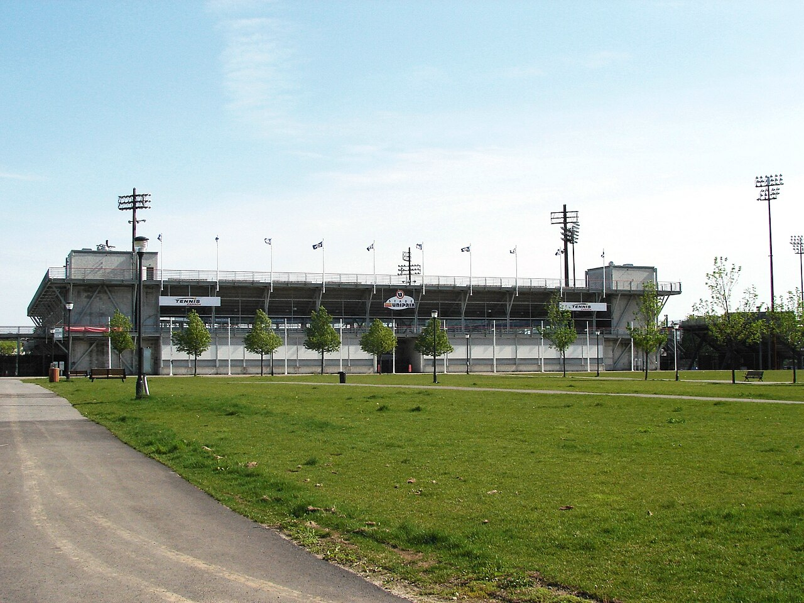
Расположенный на улице Сент-Катрин-Восток, стадион IGA (ранее известный как Uniprix) — это современная спортивно-развлекательная арена, которая служила домом для команды «Монреаль Кэнадиенс» с момента своего открытия в 1976 году. Открыт в 1976 году как новый дом хоккейной команды Монреаль Канадиенс. Провел Чемпионат мира по хоккею 1987 года и многочисленные международные матчи. Значительно отремонтировано в 2004 году для улучшения вместимости и удобств. Обладает современными звуковыми и световыми системами для живых выступлений. Была местом выступлений таких известных музыкантов, как Брюс Спрингстин, U2 и Coldplay.
Построенный в 1976 году, стадион IGA изначально назывался в честь местной продуктовой сети Uniprix. За эти годы стадион принимал множество матчей НХЛ, концертов и крупных мероприятий, став одной из самых знаковых площадок Северной Америки. Посетителям рекомендуется приехать, чтобы ощутить богатое историческое наследие и живую атмосферу старейшей хоккейной арены Канады.

Нависающий над широкой рекой Святого Лаврентия, мост Жака Картье является великолепным инженерным сооружением, соединяющим восточную и западную стороны Монреаля. Завершённый в 1940 году, он остаётся одной из знаковых достопримечательностей Канады. Длина составляет примерно 3360 метров, и на нем предусмотрены две проезды для транспорта. Его отличительная конструкция представляет собой двухэтажную структуру с пешеходными переходами на обоих уровнях. Мост назван в честь французского исследователя Жака Картье, который впервые исследовал эту местность в начале XVI века. В конце 1990-х годов были проведены масштабные реконструкции для продления срока его службы и улучшения безопасности. Посетители могут совершить прогулки по пешеходным дорожкам, наслаждаясь панорамными видами.
Построенный в период с 1938 по 1940 год, мост Жака Картье был спроектирован канадским инженером Отто Лайхтером для соединения северного и южного побережий Монреаля. Он заменил паромное сообщение и стал жизненно важным для пассажиров и путешественников. На момент строительства это был самый длинный консольный мост в Северной Америке. Мост Жака Картье предлагает захватывающие виды на реку и является символом городской инфраструктуры Монреаля.

Основанный в 1976 году, рынок Жан-Талон — это культовый публичный рынок Монреаля, известный своей яркой атмосферой и свежей продукцией. Здесь более 400 лавок, где продаются товары всего: от фруктов и овощей до мяса, морепродуктов и готовых блюд. На рынке регулярно проводятся специальные мероприятия, включая фестивали и демонстрации кулинарных мастер-классов. Посетители могут попробовать региональные блюда, такие как путин, сэндвичи с копчёным мясом и ремесленные сыры. Расположенный в самом центре квартала Плато Монреаля, он привлекает как местных жителей, так и туристов. Его архитектура сочетает элементы современного дизайна с сохранением исторического очарования.
Открытый в 1976 году как современная замена старому Центральному рынку, рынок Жан-Талон быстро стал культурным центром, где представлены местные ремесленники, фермеры и шеф-повара. Он остается одной из самых любимых институций Монреаля, привлекая посетителей своей живой атмосферой и разнообразными товарами. Jean-Talon Market – место, которое обязательно стоит посетить любителям кулинарии. Здесь уникально сочетаются традиционные ремесла и современные кулинарные инновации.

Находится на северных склонах Мон-Рояль. Парк Жан-Манс — это зелёный оазис, предлагающий панорамные виды на горизонт Монреаля и реку Святого Лаврентия. Основанный в 1906 году, он изначально был задуман как рекреационная зона для горожан, чтобы они могли наслаждаться природой среди оживлённого городского ландшафта. Парк занимает территорию площадью приблизительно 48 гектаров (118 акров). Он отличается живописными аллеями, садами и открытыми пространствами, идеально подходящими для пикников и неспешных прогулок. Парк Жанманс предлагает захватывающие панорамные виды как на город, так и на реку внизу. Помимо природных достопримечательностей, парк ежегодно проводит различные культурные мероприятия. Названный в честь Жанны Манс, этот парк увековечивает ее вклад в раннее общество Монреаля.
Основанный в 1906 году, парк Жанн-Манс назван в честь Жанн Манс, франко-канадской монахини, сыгравшей ключевую роль в создании первой больницы и образовательных учреждений Монреаля. Парк был создан городом Монреаль, чтобы предоставить жителям спокойное убежище от городского центра, одновременно демонстрируя природную красоту и культурное наследие. Посетители приходят сюда, чтобы насладиться тишиной природы в пешей доступности от центра Монреаля, что делает это место популярным направлением как среди местных жителей, так и среди туристов.
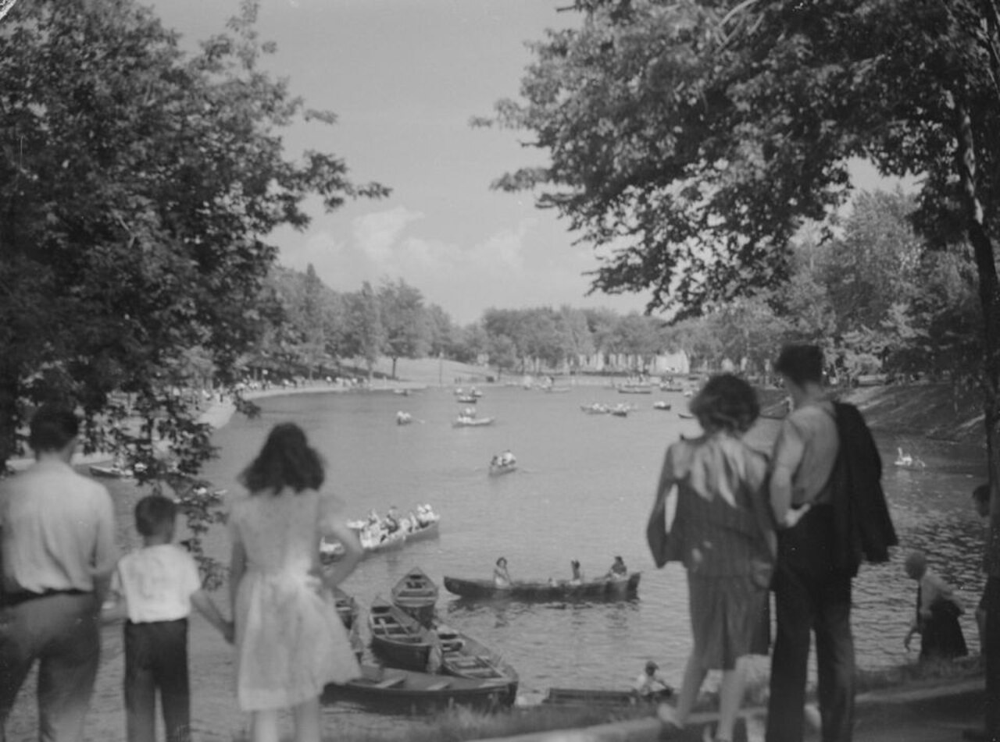
Основанный в 1868 году, парк Ла Фонтэн является самым старым и знаковым зелёным пространством Монреаля — настоящим оазисом спокойствия посреди оживлённого центра города. Изначально спроектированный ландшафтным архитектором Фредериком Лоу Олмстедом, он служит символом превосходного градостроительного планирования. Изначально оно было спроектировано Олмстедом по образцу Центрального парка в Нью-Йорке. В парке представлены элементы элегантной викторианской архитектуры и ландшафтного дизайна. Парк Ла Фонтэн круглый год принимает различные культурные мероприятия, включая концерты и фестивали. Центральный фонтан популярен среди посетителей как место для отдыха и фотографирования. Дизайн парка включает природные элементы, такие как извилистые дорожки и пышная зелень.
Основанный в 1868 году, парк Ла Фонтэн (La Fontaine Park) стал одним из первых крупных общественных парков в Канаде, вдохновленный работами известного американского ландшафтного дизайнера Фредерика Лоу Олмстеда (Frederick Law Olmsted). Он быстро превратился в любимое место встречи для жителей Монреаля, предлагая живописные прогулки, открытые пространства и спокойную обстановку среди городской суеты. Обязательно к посещению благодаря своей исторической значимости, потрясающей архитектуре и живописным пейзажам, парк Ла Фонтэн предлагает спокойный отдых в самом сердце центрального района Монреаля.
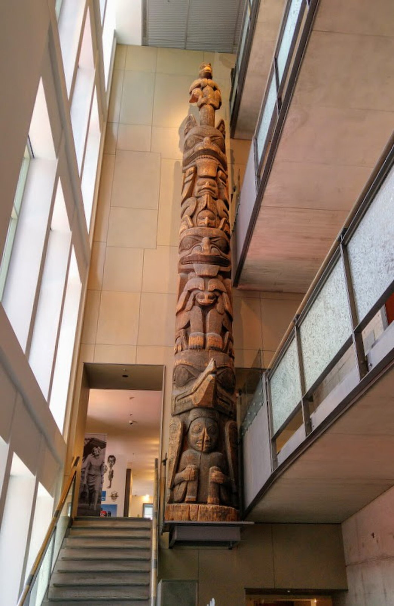
Музей Маккорд Стьюарт — музей мирового класса, демонстрирующий социальную и культурную историю Канады, особенно Квебека. Расположенный на склонах Мон-Рояля, он хранит обширные коллекции артефактов, одежды, мебели и произведений искусства, которые рассказывают истории повседневной жизни на протяжении веков. Находясь в неоклассическом здании, спроектированном архитектором Эрнестом Кормье, музей предлагает панорамные виды на центр Монреаля. В нем представлены постоянные выставки, такие как «Vestiges», которая освещает эволюцию канадской моды и дизайна. Музей также может похвастаться временными выставками, посвящёнными актуальным вопросам современного общества. Специальные программы включают экскурсии с гидом, лекции и практические мастер-классы для всех возрастов. Находится по адресу 695, улица Шербрук Оуэст, и ежегодно привлекает тысячи посетителей.
Основанное в 1909 году как Монреальский музей искусств и промышленности (Montreal Museum of Arts and Industries), это учреждение трансформировалось в нынешнюю форму после слияния со Стивартом-музеем (Stewart Museum) в 1976 году. В 1989 году оно переехало на нынешнее местоположение, где продолжает сохранять и выставлять исторические сокровища. Посетители могут ознакомиться с богатым наследием Канады посредством увлекательных экспозиций и интерактивных выставок.

Основанный в 1829 году, Университет Макгилла является старейшим англоговорящим университетом Канады и одной из ведущих мировых исследовательских институций. Его кампус охватывает разнообразные районы Монреаля, демонстрируя сочетание исторической архитектуры и современных инноваций. Известен своими сильными программами в области медицины, инженерии, права и бизнеса. Библиотечная система университета — одна из крупнейших в Северной Америке, насчитывающая более 9 миллионов экземпляров. Кампус Макгилла МакТавиша является местом расположения знаменитого Музея Редпата, где представлены экспозиции по естественным наукам и антропологии. Ежегодная церемония вручения дипломов привлекает тысячи гостей каждый год. В 2023 году Макгилл занял 46-е место в мировом рейтинге QS World University Rankings.
Основанный по королевской хартии в 1829 году как протестантское учебное заведение, Университет Макгилла превратился в всемирный центр образования и научных исследований. Он подготовил множество лауреатов Нобелевской премии и выдающихся учёных, включая физика Эрнеста Резерфорда и экономиста Джона Хикса. Посетите Макгилл, чтобы ознакомиться с его знаковыми красными кирпичными зданиями, яркой студенческой жизнью и вкладом в науку и культуру.
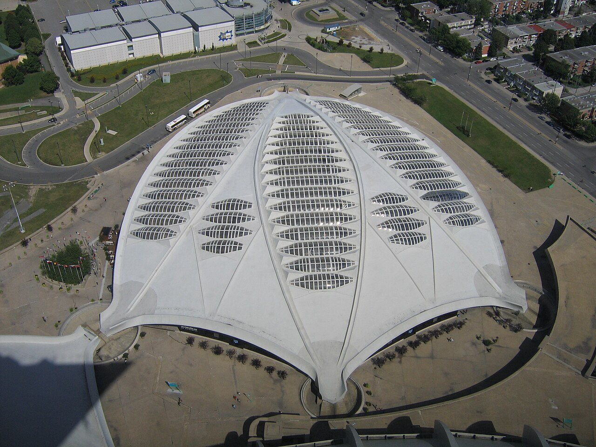
Музей-биодОм в Монреале — это музей мирового класса и аквапарк, демонстрирующий четыре различные экосистемы: Лорентийские леса, полярные регионы, залив Святого Лаврентия и тропические леса. Основанный в 1977 году, он предлагает посетителям захватывающий опыт благодаря своим увлекательным экспозициям и интерактивным выставкам. Он представляет четыре основные экосистемы: леса, полярные регионы, морскую жизнь и тропические тропические леса. В биодоме представлены более 4500 видов животных и растений. Интерактивные экспозиции позволяют посетителям потрогать некоторых существ и узнать об их поведении из первых рук. В Биодоме находится одна из крупнейших в Северной Америке закрытых колоний пингвинов. Выставки освещают экологические проблемы, такие как изменение климата и разрушение среды обитания.
Открытый в 1977 году, Монреальский Биодом изначально был частью выставки Expo '67, но впоследствии был расширен, чтобы включить более разнообразные среды обитания. Здесь представлены различные виды со всего мира, что дает образовательные сведения об их естественной среде обитания. Посещение Биодома в Монреале позволяет гостям рассмотреть уникальные экосистемы вблизи, а также узнать о природоохранных усилиях и биоразнообразии.

Ботанический сад Монреаля — один из крупнейших и самых известных ботанических садов Северной Америки, где представлены разнообразные флоры со всего мира. Площадью более 75 акров и насчитывает более 24 миллионов растений. В саду расположено пять отдельных тематических павильонов, каждый из которых представляет различную климатическую зону. Знаменитый Орхидейный Павильон ежегодно проводит международные выставки. В дополнение к своим постоянным коллекциям, сад регулярно проводит временные выставки на различные темы, связанные с ботаникой и сохранением окружающей среды. Привлекает миллионы посетителей ежегодно, что делает его одной из главных туристических достопримечательностей Канады.
Основанный в 1931 году, сад изначально задумывался как научное исследовательское учреждение для садоводства и изучения растений. Со временем он превратился в популярное место как для местных жителей, так и для посетителей, раскинув обширные коллекции растений, включая тропические оранжереи, травяные сады и формальные цветочные композиции. Посещение Ботанического сада Монреаля предоставляет возможность изучить разнообразные экосистемы и узнать о разнообразии растений, наслаждаясь живописными пейзажами и образовательными выставками.

На вершине парка Мон-Роя находится Ратуша Монреаля — величественный символ гражданской гордости и самоуправления. Проект, разработанный известным архитектором Эрнестом Кормье, был завершен в период между 1962 и 1968 годами. Завершено в период с 1962 по 1968 год. Дизайн: Эрнест Кормье. Расположен в парке Маунт-Рояль. С стеклянным фасадом. Влияние принципов функционализма Ле Корбюзье.
Построенный в середине XX века, Мэрия Монреаля представляет собой образец модернистской архитектуры, вдохновленной функционализмом Ле Корбюзье. Дизайн здания включает гладкие линии, большие окна и эффектный стеклянный фасад, который отражает окружающую обстановку. Ратуша Монреаля, обязательное место для посещения любителей городского планирования и архитектурных инноваций, также является местом расположения важных административных учреждений.
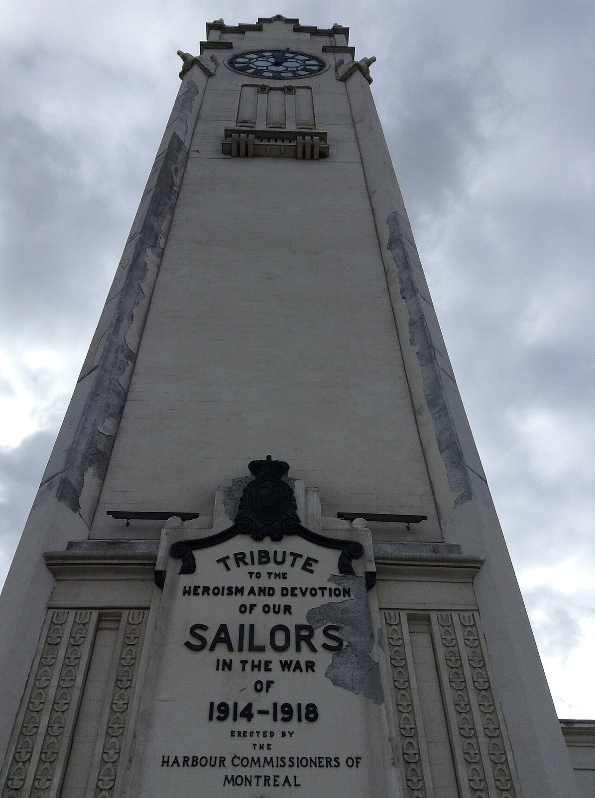
Расположенная высоко над Старым портом Монреаля, Башня Монреальских часов является ярким символом богатого наследия и современного инженерного гения города. Построенная к выставке Expo 67, она служит свидетельством яркой культуры и архитектурного мастерства Монреаля. Построен специально к Всемирной выставке 67 года, демонстрируя технологические достижения Канады. Его отличительной особенностью является циферблат, который вращается вслед за солнцем, гарантируя точность на протяжении всего дня. Посетители могут подняться на смотровую площадку, откуда открывается захватывающий вид на Старый порт и центр Монреаля. Башня содержит музей, посвященный истории Экспо 67 и его влиянию на канадскую культуру. Благодаря своей живописной обстановке, это место стало популярным для проведения свадеб и фотосессий.
Построенная в 1967 году к Всемирной выставке «ЭКСПО 67», Монреальская часовая башня была спроектирована архитектором Артуром Эриксоном. Изначально она служила как часы и информационный центр, предоставляя посетителям представление о выставках ниже. Сегодня она остается одной из самых знаковых структур Монреаля, привлекая туристов своим уникальным дизайном и панорамными видами. Часы Монреаля предлагают непревзойденные виды на городскую панораму, что делает их обязательным местом посещения для всех, кто исследует исторический центр Монреаля.

Музей насекомых Монреаля — это музей мирового класса, посвященный изучению и восхищению насекомыми. Расположенный в Ботаническом саду, он представляет более 4000 видов удивительных существ, многие из которых являются аборигенными для Канады. Содержит более 4000 видов насекомых со всего мира. Выставки включают интерактивные экспонаты и живые демонстрации. Посетители могут наблюдать за вылупляющимися из коконов бабочками в специальной комнате. Там есть тематические зоны, посвященные конкретным типам насекомых, таким как пчёлы, жуки и стрекозы. В течение года регулярно проводятся специальные мероприятия и семинары.
Открытый в 1998 году, Инсектарий Монреаля был спроектирован известным архитектором Моше Сафди. Он быстро стал одной из самых популярных достопримечательностей города, привлекая посетителей со всего мира, которые были заинтересованы его уникальными экспозициями и образовательными программами. Посещение Музея насекомых Монреаля (Montreal Insectarium) предоставляет возможность узнать о биоразнообразии и о решающей роли, которую насекомые играют в экосистемах.

Основанный в 1919 году, Монреальский музей изобразительных искусств является одним из ведущих культурных учреждений Канады. Расположенный на улице Шербрук-Уэст (Sherbrooke Street West), он представляет обширную коллекцию произведений искусства, охватывающих столетия и континенты. Музей содержит более 40 000 произведений искусства в своей постоянной коллекции. Здесь проводятся сменяющиеся выставки, посвященные как местным, так и международным художникам. Заметные архитектурные элементы включают его неоклассический фасад и интерьерный дизайн, выполненный известным архитектором Эрнестом Кормье. Музей может похвастаться современными технологиями для экспонирования цифрового искусства и интерактивного опыта. Помимо художественных выставок, здесь также проводятся образовательные программы, лекции и представления.
Изначально основанный как Монреальская художественная ассоциация в 1860 году, музей прошел значительную реконструкцию и репозиционирование, чтобы стать Музеем изящных искусств Монреаля в 1919 году. С тех пор он превратился в центр выставок современного и классического искусства, привлекая посетителей со всего мира. Посещение музея предлагает захватывающий опыт благодаря его обширным коллекциям, включающим импрессионистские работы, современные шедевры и традиционные произведения.
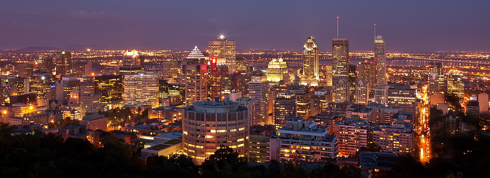
Расположенный высоко над оживленными улицами Монреаля, шале Маунт-Роял — это очаровательное деревенское убежище, спрятанное в самом сердце самого знакового парка Канады. Построенное в 1942 году, оно предлагает посетителям уютный побег среди высоких деревьев и безмятежных видов. Он отличается традиционной срубной конструкцией с деревянными балками и открытыми стропилами. Интерьер украшен рустикальной эстетикой с антикварной мебелью и акцентами из теплого дерева. Гости могут вкусить местную кухню, приготовленную опытными шеф-поварами в ресторане на территории. Расположение обеспечивает непревзойденные виды на парк Мон-Рояль и деловой центр Монреаля. Зимой шале становится популярным местом для катания на коньках и снегоступов.
Построенное во время Второй мировой войны, это шале изначально предназначалось в качестве временного убежища для солдат, дислоцированных поблизости. Со временем его очарование привлекло местных жителей, ищущих спасения от городской суеты, что позволило ему превратиться в любимую достопримечательность и место встреч. Посетители приезжают в шале Маунт-Роял, чтобы насладиться панорамным видом на город, отдохнуть у камина и впитать безмятежную атмосферу природного объятия.

В самом сердце Монреаля находится Маунт-Рояль (Mount Royal) — безмятечный холм, откуда открываются панорамные виды на город и его знаковые достопримечательности. От смотровой площадки Маунт-Рояль открываются одни из самых любимых видов, предлагая посетителям захватывающие панорамные панорамы Старого Монреаля (Old Montreal), центра города и реки Святого Лаврентия. Предлагает панорамные виды всего городского пейзажа. Посетители могут добраться до смотровой площадки историческим фуникулёром. В районе смотровой площадки расположены пышные зелёные парки и пешеходные тропы. Встречаются многочисленные скамейки и места для пикника, идеальные для отдыха и наслаждения видами. Мероприятия, такие как летние концерты и салюны, здесь проводятся регулярно.
Гора Роял долгое время была символом идентичности Монреаля, получившая название в честь королевской семьи короля Карла II. Первоначально она была населена коренными народами, прежде чем стать частью Новой Франции. Сегодня она служит важной культурной достопримечательностью, где в течение всего года проводятся различные фестивали и мероприятия. Смотровая площадка на горе Рояль необходима для понимания планировки города, а также для оценки его уникальной архитектуры и городского дизайна.
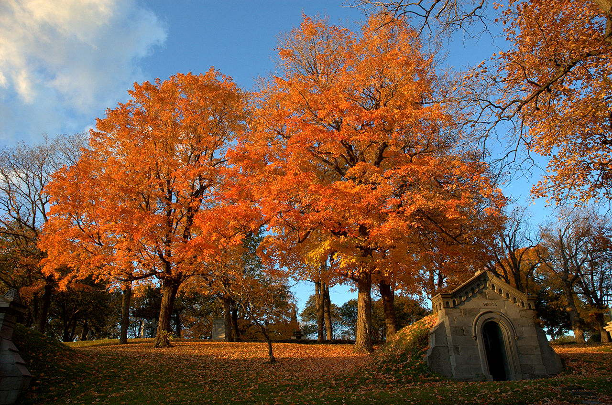
Кладбище Нотр-Дам де Неже (Notre Dame des Neiges) – одно из самых заметных кладбищ Монреаля, расположенное на западной окраине города. Основанное в 1874 году, оно стало значимым культурным и историческим местом, отражающим эволюцию городского ландшафта Монреаля. Он занимает площадь около 60 акров. На кладбище находится множество известных могил и мемориальных надгробий, включая захоронения известных местных деятелей. «Нотр-Дам де Неже» представляет как традиционные, так и современные дизайны, демонстрируя эволюцию погребального искусства. Посетители могут найти примеры готического возрождения, неоклассического и ар-нуво стилей в планировке кладбища.
Основан кладбищенский комплекс Нотр-Дам-де-Неж в 1874 году Архиепархией Монреаля и изначально задумывался как место захоронения для католических семей. Со временем его функции расширились, чтобы обеспечить размещение разнообразных религиозных общин, включая протестантов и евреев. В настоящее время кладбище занимает площадь более 60 акров и включает в себя изящные памятники, статуи и богато украшенные гробницы, отражающие различные архитектурные стили. Notre Dame des Neiges предлагает посетителям уникальную возможность изучить богатое наследие Монреаля через его архитектуру и историю.
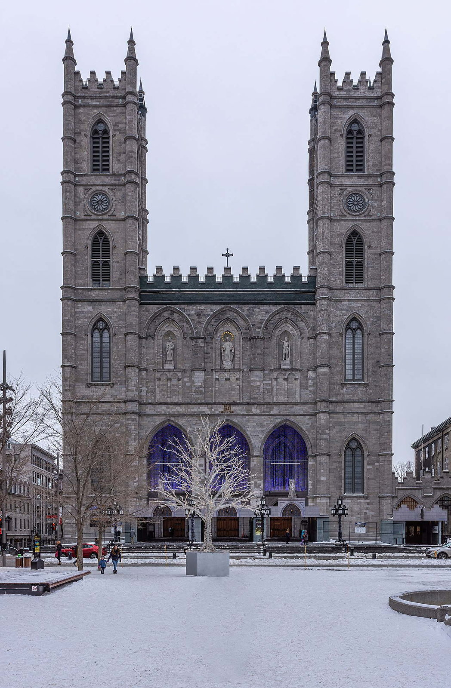
Базилика Нотр-Дам Монреаля — это потрясающий образец французского барокко, известная своими позолоченными украшениями и замысловатой резьбой по дереву. В интерьере использованы декоративные позолоты. На алтаре находится знаменитая статуя Марии, известная как «Мадонна Семерых скорбей». Его витражи изображают сцены из Библии и канадской истории. Орган в базилике, созданный Casavant Frères, является одним из крупнейших管овых органов Северной Америки. Считается одной из самых красивых церквей в Канаде.
Построенная между 1824 и 1829 годами, базилика возводилась на месте ранее существовавшей часовни, уничтоженной пожаром. Проект архитектора Джеймса О'Доннелла сочетает элементы готического возрождения и французского барокко. Базилика признана Национальным историческим памятником Канады благодаря своей значительной исторической и архитектурной ценности. Посетители приходят сюда, чтобы полюбоваться роскошным интерьером, украшенным сусальным золотом, мраморными статуями и изысканной резьбой по дереву.

Храм Нотр-Дам-де-Неже — торжественное и безмятежное святилище, расположенное на обширной территории кладбища Мон-Рояль в Монреале. Эта часовня служит как духовным убежищем, так и местом упокоения для многих выдающихся жителей Монреаля. Капелла была освящена в 1874 году. Отсюда открывается вид на живописный парк Маунт-Рояль. Среди погребенных здесь — известные личности, включая представителей монреальской элиты и знаменитых художников. Внутри богато украшена изящной резьбой и пышными деталями. Часовня открыта для посетителей круглый год.
Построенная в конце XIX века, часовня Нотр-Дам-де-Неж является произведением архитектора Шарля Бэйярже в нео-готическом стиле. В ней представлены сложные каменные резьбы и витражные окна, изображающие сцены библейского значения. Во время строительства часовня стала заметной достопримечательностью и по сей день остается символом архитектурного наследия Монреаля. Посещение собора Нотр-Дам-де-Неж предлагает возможность исследовать богатое культурное и историческое наследие Монреаля, наслаждаясь при этом красотой его архитектуры и природного окружения.
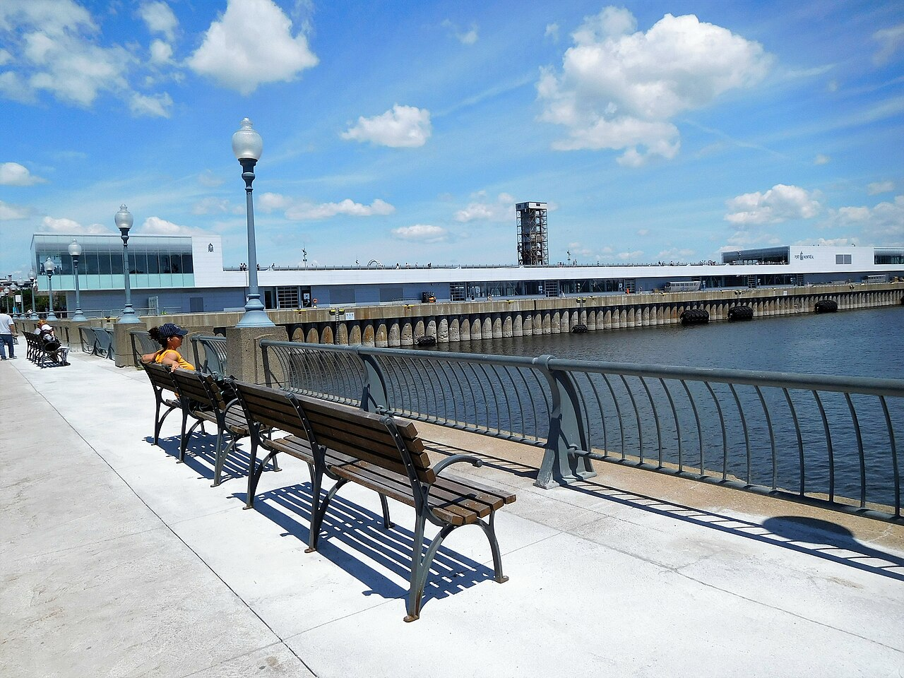
Старый порт Монреаля — оживленный набережный район, расположенный на берегу реки Святого Лаврентия. Изначально заложенный в колониальную эпоху как торговый и военно-морской центр, он превратился в одну из самых знаковых туристических достопримечательностей Канады. В 1986 году оно было признано Национальным историческим объектом Канады. Старый порт проводит различные фестивали в течение года, включая Международный джазовый фестиваль в Монреале и Летний фестиваль в Монреале. Его марина обслуживает более 400 лодок и яхт. Ква-Жак-Картье предлагает панорамные виды на реку и окружающий городской пейзаж. Зимой эта местность превращается в популярное место для катания на коньках.
Основанный во начале XVII века французскими исследователями, Старый порт служил стратегическим военным форпостом и коммерческим центром для пушного промысла и морской торговли. Сегодня его исторические здания, мощеные улицы и живописный набережный район стали символами богатого наследия и культурной самобытности Монреаля. Посетители приезжают, чтобы насладиться очаровательной атмосферой, историческими достопримечательностями и живописными видами реки Святого Лаврентия.
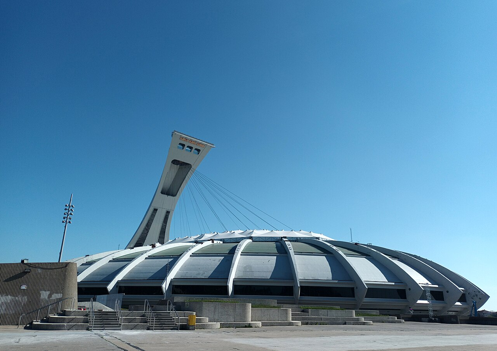
Олимпийский стадион — это спортивный и культурный объект мирового уровня, расположенный в живописном парке Оливье-Леклерк (Parc Olivier-Leclercq) в Монреале. Он был спроектирован архитектором Роже Тайльебер (Roger Taillibert) и завершен в 1976 году для проведения Летних Олимпийских игр. Он оснащен отличительной откидной крышей, которая может быть открыта для проникновения естественного света в зону сидения. Стадион вмещает более 60 000 зрителей во время крупных мероприятий. Её культовая башня, известная как «La Torrette», открывает панорамный вид на центр Монреаля и прилегающие районы. После проведения Олимпийских игр стадион стал многофункциональным комплексом, используемым для концертов, конференций и специальных мероприятий. В последние годы здесь была проведена масштабная реконструкция для улучшения доступности и повышения уровня безопасности.
Построенный к Летним играм 1976 года, этот стадион с тех пор стал одной из самых знаковых построек Канады. Он принимал многочисленные международные спортивные мероприятия, включая Суперкубок "Грей" (Grey Cup) 1985 года и квалификацию к чемпионату мира по футболу FIFA 1994 года. Кроме того, стадион служил домашней ареной для бейсбольной команды Montreal Expos до их переезда в 2004 году. Посетители приезжают сюда, чтобы ощутить уникальную архитектуру и впечатляющий масштаб, которые сочетают современный дизайн с историческим значением.
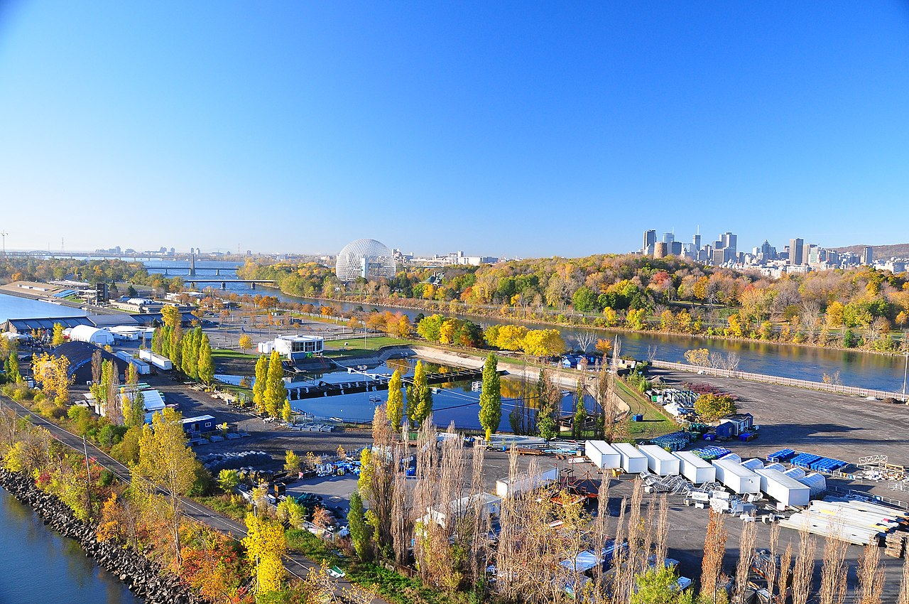
Находится на острове Сент-Элен, парк Жана-Драпо (Parc Jean-Drapeau) — это яркий городской оазис, демонстрирующий богатое культурное наследие и природную красоту Монреаля. Этот парк был центральной частью выставки Экспо 67, где посетители могли ознакомиться с инновационной архитектурой, художественными инсталляциями и ослепительными экспозициями. В парке есть обширные пешеходные тропы, зоны для пикников и набережные прогулочные аллеи. Включает культовую Биосферу, которая изначально была построена как Павильон Канады во время Экспо 67. Ежегодные события, такие как Jazz Fest Montreal и Международный конкурс фейерверков в Монреале, привлекают тысячи посетителей каждый год. Расположенный на острове Сент-Элен, он предлагает панорамные виды на реку Святого Лаврентия и Старый Монреаль. В парке также находится марина и пляж для купания.
Построенный к выставке «Экспо 67» в 1967 году, парк Жан-Драпо служит основной площадкой для всемирной выставки, демонстрируя технологические достижения и художественное мастерство Канады. Парк остается свидетельством приверженности Монреаля инновациям и культуре, ежегодно принимая фестивали и мероприятия, которые привлекают как местных жителей, так и туристов. Туристы приезжают в парк Жана-Драпо в поисках живописных пейзажей, знаковых достопримечательностей, таких как Биосфера, и динамичных культурных мероприятий.
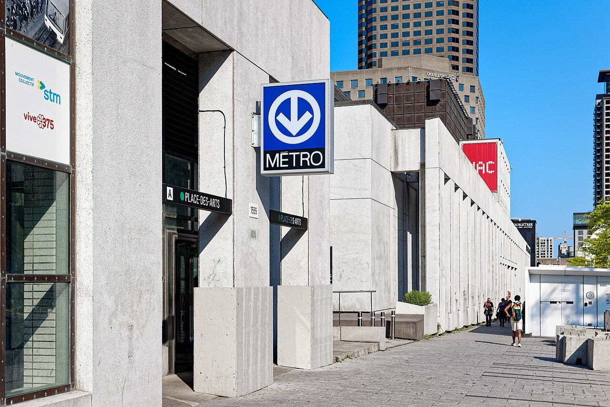
В самом сердце культурного района Монреаля находится Place des Arts – яркий центр сценического искусства и живых выступлений, который функционирует с момента своего основания в 1962 году. Эта знаковая площадка всегда была центральной для художественной жизни Монреаля, принимая мирового уровня представления в самых разных жанрах. В нем находится несколько театральных пространств, включая Théâtre Maisonneuve, Théâtre Jean-Duceppe и Grand Théâtre de Montréal. Комплекс был разработан известным архитектором Роже Тайльебер и представляет собой модернистскую архитектуру со стеклянными фасадами и открытыми площадками. На протяжении многих лет здесь принимали множество знаменитых исполнителей, таких как Cirque du Soleil, Opera de Paris и бродвейские шоу. Ежегодный летний фестиваль привлекает тысячи посетителей каждый год, представляя разнообразные музыкальные выступления и театральные постановки. Сегодня это остается центром притяжения как для туристов, так и для местных жителей, ищущих высококлассный художественный опыт.
Созданный в 1962 году в рамках амбициозного проекта городского обновления Монреаля, Place des Arts быстро стал одной из главных площадок Канады для театра, танца, музыки и оперы. Он сыграл ключевую роль в демонстрации местного таланта, а также в привлечении международных артистов и постановок. Место, которое обязательно стоит посетить всем, кто интересуется богатым культурным наследием и динамичной сценой исполнительских искусств Монреаля.

В самом центре делового района Монреаля расположена площадь Жака-Картье (Place Jacques-Cartier) — оживленная городская площадь, которая на протяжении веков оставалась центром жизни города. Расположенная среди исторических зданий и оживленных улиц, она является центром притяжения как для местных жителей, так и для гостей города. Расположен рядом со Старым Монреалем и базиликой Нотр-Дам. На площади расположены статуи в честь выдающихся деятелей канадской истории. Ежегодные летние концерты и фестивали проводятся здесь, привлекая тысячи людей. В ближайших зданиях находятся известные достопримечательности, такие как Пале де Конгре (Palais des Congrès de Montréal). Зимой эта территория превращается в популярную катку для коньков.
Назван в честь французского исследователя Жака Картье, который впервые исследовал Канаду в начале XVI века, Place Jacques-Cartier изначально был разработан как рыночная площадь в конце XVIII века. Со временем он превратился в ключевую точку сбора для горожан, где проводятся различные фестивали, парады и культурные мероприятия. Must-visit место для всех, кто исследует исторический центр Монреаля. Пляс-Жак-Картье (Place Jacques-Cartier) предлагает представление о богатом наследии города, сохраняя при этом живую атмосферу в течение всего года.
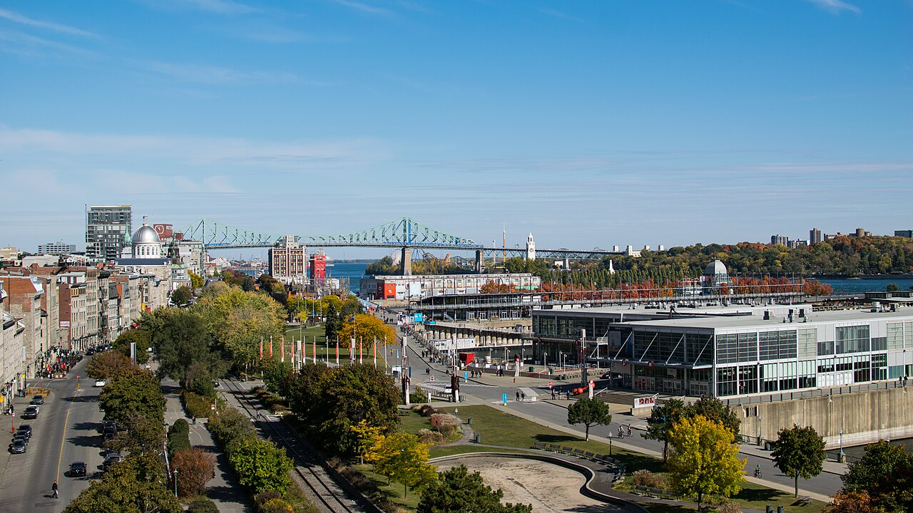
Музей «Пуан-а-Кальер» — яркое культурное учреждение, демонстрирующее богатую историю Монреаля и его коренное наследие. Здесь хранится одна из крупнейших коллекций доисторических артефактов Канады. Интерактивные дисплеи вовлекают посетителей в практические занятия и мультимедийные презентации. Расположение музея подчеркивает его историческую значимость как бывшего торгового поста. Постоянно меняющиеся выставки предлагают новые взгляды на местную культуру и археологию. Групповые туры предлагают представление о самых значимых экспонатах музея.
Основанный в 1982 году, музей изначально располагался на Place d'Youville, а затем в 2002 году переехал на нынешнее местоположение на Rue Sainte-Catherine. Здесь хранится артефакты возрастом в тысячи лет, включая предметы племен ирокезов и алгонкинов, которые населяли эту местность задолго до европейского поселения. Посетители могут изучить историю развития Монреаля посредством интерактивных экспозиций и археологических находок, освещающих глубокие корни города.

Расположенный на берегу Канала Лашин в Монреале, планетарий Rio Tinto Alcan — это оживленный культурный центр, представляющий передовые астрономические выставки и иммерсивные показы в планетарии. Во время Экспо 67 здесь приняло тысячи посетителей, внеся значительный вклад в успех Всемирной выставки. Планетарий оснащен передовыми цифровыми проекторами и высококачественными экранами для реалистичного наблюдения за звездами. По завершении строительства его инновационный дизайн завоевал несколько архитектурных премий. До сих пор это остается популярным местом как для семей, так и для любителей астрономии. В рамках регулярно проводимых программ включены живые презентации, мастер-классы и специальные мероприятия.
Открытый в 1967 году в рамках выставки Expo 67, планетарий был разработан известным архитектором Моше Сафди, чтобы отпраздновать освоение космоса и вызвать интерес к Вселенной. Его культовая купольная конструкция стала одной из самых узнаваемых символических достопримечательностей выставки и привлекла миллионы посетителей в год своего открытия. Посетите Планетарий Rio Tinto Alcan, чтобы совершить незабываемое путешествие сквозь звёзды, где передовые технологии и интерактивные экспозиции оживляют вселенную.
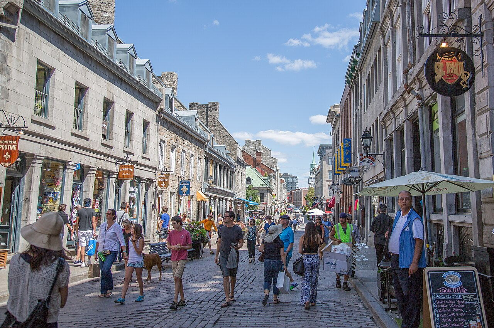
Улица Сен-Поль (Rue Saint-Paul) — культовая главная улица Монреаля, которая тянется от Старого Монреаля до центра города. Это оживленный центр для шопинга, питания и развлечений, вымощенный историческими зданиями, бутиками, кафе и модными барами. Он пролегает примерно на 4 километра от Place d'Armes до Atwater Market. Улица была названа в честь Поля де Шомеди, Сьера де Мезоннёва, основателя Виль-Мари (Старый Монреаль). Значительные достопримечательности включают церковь Нотр-Дам-де-Бонсекур и Старый таможенный павильон. В последние годы были реализованы проекты по ревитализации, направленные на повышение пешеходной доступности и улучшение городской эстетики. Известные ежегодные мероприятия, такие как Nuit Blanche и Jazz Fest Montreal, проходят вдоль его протяжённости.
Изначально построенная в начале XVIII века в качестве главной магистрали, соединяющей Старый Монреаль с более новыми районами города, улица Сен-Поль (Rue Saint-Paul) всегда играла центральную роль в развитии Монреаля с самого начала. Со временем она приобрела известность благодаря своей оживленной коммерческой деятельности, культурному разнообразию и бурной ночной жизни. Посетите улицу Сен-Поль, чтобы ощутить богатое наследие Монреаля, пошопиться в местных бутиках, насладиться вкусной кухней и насладиться яркой атмосферой города.

Расположенный высоко на горе Рояль, величественный Ораторий Святого Иосифа является крупнейшей католической церковью Монреаля и одной из его самых знаковых достопримечательностей. Завершенный в 1967 году после десятилетий строительства, он служит свидетельством незыблемой веры и преданности прихожан. Он славится крупнейшим в мире мозаичным потолком, покрывающим более 1 800 квадратных метров. Внутри отделано изысканной мраморной резьбой и золочением. Посетители могут подняться на вершину купола, чтобы насладиться панорамными видами центра Монреаля. Ежегодное паломничество привлекает тысячи верующих. Находится в пешей доступности от парка Мон-Рояль и дополняет экскурсии для любителей природы.
Строительство началось в 1924 году по планам архитектора Эрнеста Кормье. Орторий задумывался как духовное место уединения для жителей Монреаля, предлагающее утешение в условиях городской жизни. За четыре десятилетия проект превратился в массивную базилику, в которую были включены сложные мозаики, мраморные интерьеры и возвышающийся купол, символизирующий божественное присутствие. Место, которое обязательно стоит посетить всем, кто интересуется архитектурой, религией или культурным наследием Монреаля. Ораторий Святого Иосифа предлагает захватывающие виды на город и служит духовным центром для католиков со всего мира.
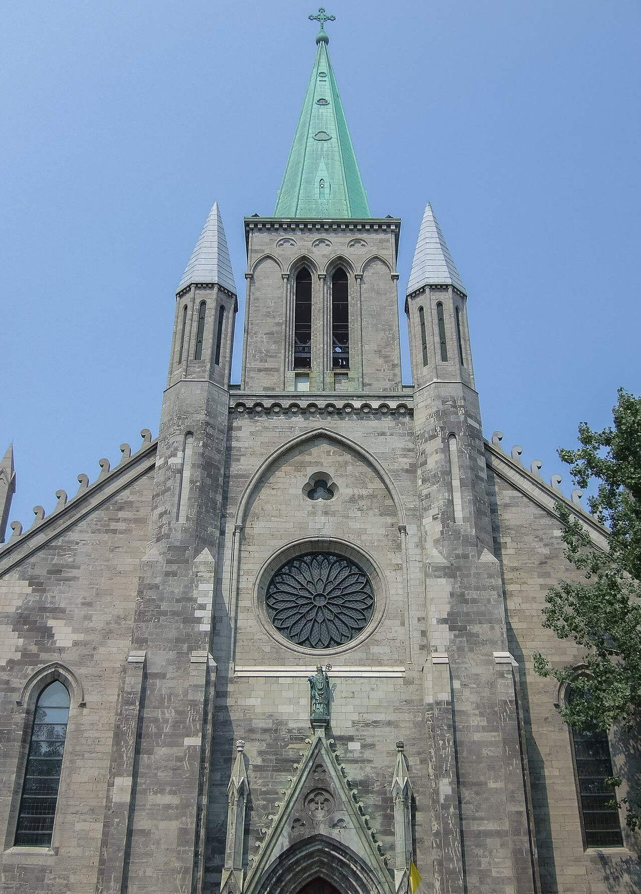
Доминирующая в районе Старого порта Монреаля, базилика Святого Патрика является величественным свидетельством архитектуры неоготического стиля и католического благочестия. Её парные шпили устремляются ввысь, символизируя стремление церкви к небесным высотам. Одна из крупнейших церквей Канады и национальное святилище. Базилика украшена впечатляющими скульптурами, изображающими сцены из жизни святого Патрика. Его возвышающиеся шпили видны на многие мили вокруг, что делает его выдающимся ориентиром. Регулярные мессы и особые службы привлекают как местных жителей, так и туристов. В нем хранятся реликвии, связанные со Святым Патриком, что значительно повышает его значимость для Католической Церкви.
Построенная в период с 1876 по 1894 год, Базилика Святого Патрика была спроектирована архитектором Жозефом-Октавом Коте. Она заменила более раннюю часовню, которая была разрушена пожаром. Базилика стала важным духовным центром для ирландского сообщества Монреаля, способствуя формированию культурной самобытности и религиозных обрядов. Посетители приезжают, чтобы полюбоваться его величественным интерьером, замысловатыми витражами и грандиозным органом, который усиливает атмосферу поклонения.

Уютная площадь, расположенная в самом сердце Старого Монреаля, площадь Сен-Луи (Square Saint-Louis) — это живописный оазис, наполненный причудливыми кафе и уютными магазинчиками. Окруженная историческими зданиями и вымощенная мостовыми улицами, она предлагает тихое убежище среди оживленной городской жизни. Построенная во времена французской колониальной эпохи, площадь изначально называлась Place Royale, прежде чем была переименована в честь короля Людовика XIV. Выделяется изящной архитектурой, характерной для исторического центра Старого Монреаля, включая неоклассические фасады и изысканное кованое железо. Сегодня на площади проходят различные культурные мероприятия, такие как фестивали, уличные ярмарки и концерты в течение года. В непосредственной близости от площади расположены несколько примечательных достопримечательностей, таких как часовня Нотр-Дам-де-Бонсекур и музей Шато-Рамезей. Каменные брусчатые дорожки и скамейки создают идеальную обстановку для неспешных прогулок и спонтанных пикников.
Основанная в конце XVII века в рамках первоначального городского планирования города, Площадь Сен-Луи с момента своего создания стала центром общественных собраний и социальных мероприятий. Со временем она превратилась в оживленное место, куда приходят и местные жители, и туристы, чтобы отдохнуть, поужинать и насладиться живыми музыкальными выступлениями. Туристам следует исследовать Площадь Сен-Луи, чтобы ощутить аутентичную атмосферу Старого Монреаля и оценить её историческое значение.

Подземный город, также известный как RESO, — это обширная сеть пешеходных проходов и торговых центров, связывающих центральный район Монреаля. Он протянулся более чем на 20 миль под улицами, предлагая укрытие от неблагоприятных погодных условий и обеспечивая легкий доступ к магазинам, ресторанам и достопримечательностям. Он покрывает примерно 20 миль взаимосвязанными проходами и торговыми зонами. В пределах этой обширной сети расположено более 140 заведений. Комплекс включает несколько уровней и соединяет множество станций метро, что обеспечивает повышенное удобство. Его конструкция обеспечивает круглогодичный комфорт независимо от погодных условий. Это считается архитектурным чудом благодаря инновационному использованию пространства.
Построенный в конце 1960-х — начале 1970-х годов, Подземный город (Underground City) задумывался для соединения основных офисных зданий, отелей и культурных учреждений Монреаля, таких как Музей изящных искусств (Museum of Fine Arts) и Плэс-де-ар (Place des Arts). Его строительство преобразило городскую среду, создав уникальную крытую среду, которая до сих пор остается одним из крупнейших подземных комплексов в Северной Америке. Гости могут исследовать различные магазины, кафе и места развлечений, не выходя ни на минуту под открытое небо, что делает это удобным и приятным способом перемещения по оживленному центру города.
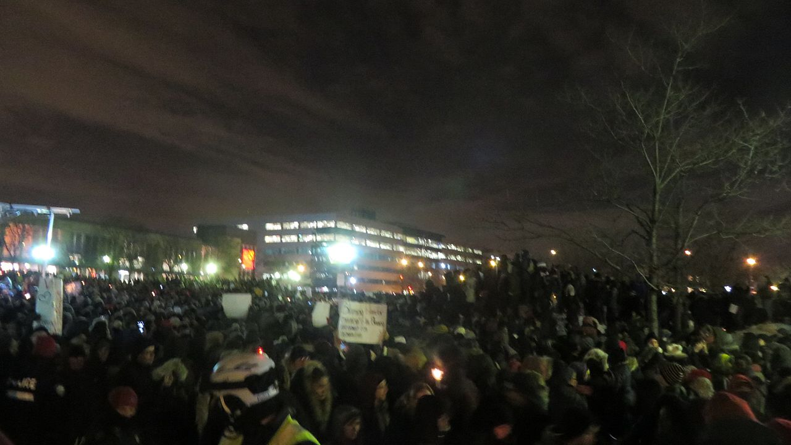
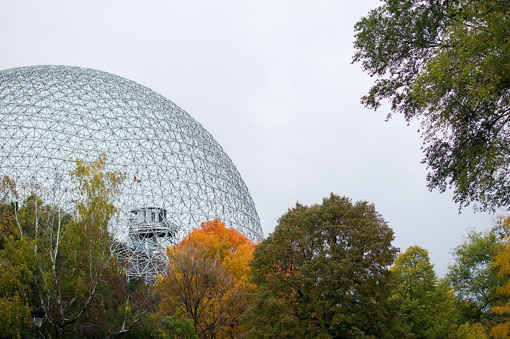
Расположенный на южном конце Старого порта Монреаля, остров Сен-Элен (Île Sainte-Hélène) — это небольшой остров, откуда открываются потрясающие виды на реку Святого Лаврентия и гору Рояль. Это живописное место является любимым местом встреч как для местных жителей, так и для посетителей с момента его открытия. Остров площадью около 4 гектаров, доступен через пешеходный мост от Олд Порт Квей. В нем расположен пышный зеленый парк со скамейками, идеально подходящий для пикников и неспешных прогулок. Летом на острове проводятся различные культурные мероприятия и концерты. С острова можно одновременно наблюдать как реку Святого Лаврентия, так и гору Рояль. Историческая крепость Руйе, первоначально построенная в 1692 году, когда-то стояла на острове, но сегодня существует только в виде руин.
Открытый французскими исследователями в начале XVII века, остров Сен-Элен был назван в честь святой Елены, матери императора Константина. Изначально он использовался в качестве военного форпоста, а позже стал стратегическим местом для судоходства и торговли. Сегодня этот остров служит мирным оазисом среди оживленной городской среды. Посетите остров Сент-Элен, чтобы насладиться панорамными видами, отдохнуть на природе и погрузиться в богатое историческое наследие Монреаля.